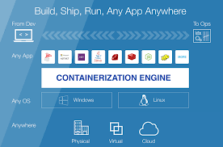

My name is Cameron Kinsey. I am currently a senior at the University of the Cumberlands. I am majoring in Information Technology with concentrations in Infrastructure and Cybersecurity. I am also currently pursuing the CompTIA Security+ Certification and will be starting the Information Systems Security Master's program here at the University of the Cumberlands in the Summer of 2023.
Currently I am employeed at Dayspring Health, Inc. as an IT Team Member. Currently I am a working part time but intend to move to full time once I have graduated with my Bachelor's degree. My position currently is mostly support, but I would like to move to something involving either networking or cloud computing. I also would like to entertain the idea of architecting solutions for companies and customers.
